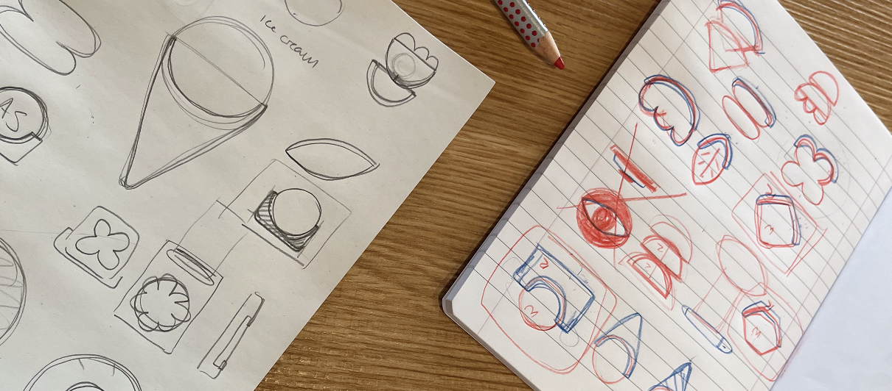
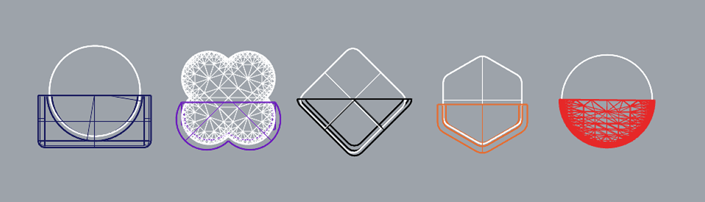

Overview
Networking at creative events — gallery openings, design conferences, graduate shows — tends to follow a familiar and slightly uncomfortable script: small talk, a fumbled business card, a promise to follow up that rarely happens. The card gets lost. The connection doesn't form. For designers, whose work lives in digital portfolios and social profiles, handing over a rectangle of card stock feels like the worst possible representation of who they are.
Tap & Know is a wearable smart pin that replaces that exchange with something more honest to how creatives actually exist online. You wear it. Someone gets curious. They take the detachable piece, tap it to their phone, and your portfolio — or any link you've set — opens instantly. No app to download, no QR code to squint at, no friction at all.
The project was designed and built as a physical–digital interaction exercise: how do you make a networked object that earns attention because of how it looks, then delivers on that curiosity through the interaction itself? Co-designed with Duru Erdem, the whole process — from concept to final prototypes — was handled by the two of us.
Equal co-designer with Duru Erdem — concept, interaction design, 3D modelling, prototyping, and visual direction.
- Rhino 8
- 3D Printer (PLA filament)
- Figma
Physical–digital prototype · Personal project
Ideation
The starting point was personal: we both found networking genuinely difficult. Not because of shyness, but because the available tools feel mismatched to how creative professionals think about themselves. A business card implies a fixed identity. Scanning a QR code asks the other person to do work. Typing a username into a phone while someone watches is awkward for everyone involved.
As interaction designers, the question we kept returning to was: what if the object itself created the opening for a conversation, rather than asking the person to create it? A wearable made sense immediately — it's always with you at an event, it's visible without you having to do anything, and it shifts the dynamic from "let me give you my card" to "I notice you're wearing something interesting."
Why a pin?
The pin form was a deliberate choice on several fronts. It attaches to any outfit without asking the wearer to commit to a bag or lanyard. It sits at chest height — in the natural field of view during a face-to-face conversation. And it has a long cultural history as a marker of identity and affiliation, which meant the object would carry meaning even before someone understood what it did.
The key interaction constraint we set early: the person sharing must be able to hand something physical to the receiver. Not just show a QR code or hold up a phone. The act of passing an object — even a small one — changes the social register of the interaction. It creates a moment of contact that a screen-to-screen exchange simply doesn't.

Early concept exploration — sketches, form studies, and interaction models.
Prototyping
We modelled the pin in Rhino 8, iterating through multiple shape families before settling on a set of geometric forms — angular, minimal, and distinct enough to read as designed objects rather than generic wearables. The two-part structure (a fixed base that attaches to clothing and a detachable component with the embedded technology) was resolved early and stayed consistent across all shape variants.
Prototypes were 3D printed in PLA filament. Printing in PLA let us test proportions and fitment quickly, and the material's slight rigidity meant the detachable piece had a satisfying physical resistance when removed and replaced — which turned out to matter more than we expected. The tactile quality of the handoff is part of what makes the interaction feel intentional rather than incidental.


Rhino 8 model (left) and early PLA prints (right) — testing proportions, fitment, and the detach mechanism.

Iteration progression — refining the geometry and the two-part connection across multiple prints.
Interaction
The full interaction sequence was designed to feel effortless for both people involved — the wearer and the person they're sharing with. Before the event, the wearer sets their link — a portfolio, a Linktree, a LinkedIn profile, or any URL they choose. The technology is embedded in the detachable component, which clips securely into the base but can be removed with one hand.
Set your link
Before the event, Set your link — portfolio, Linktree, or any URL. Takes under a minute, no app needed.
Wear it
Attach the pin to your outfit. The object does the work of starting the conversation — curiosity is built into the form.
Hand it over
Detach the piece and pass it to the other person. They tap it to the back of their phone — your link opens instantly, no app required.

The tap interaction — the detachable piece held against the back of a phone, opening a link instantly.

The full interaction sequence in motion.
Final Prototype
The final set comprises five shapes, each available in multiple colourways. The shape range was a deliberate response to something we noticed early: a single generic design would have made the object feel like a product, where the wearer is a customer. Different shapes for different personalities — geometric, organic, angular, rounded — makes it feel like a choice. You pick the one that fits how you want to present yourself, which is exactly what a networking tool should ask you to do.
Each variant uses the same internal structure and technology, so the interaction is identical regardless of which shape you choose. The modularity also means the detachable piece is interchangeable across shapes — useful when you want to share at speed and don't need to think about which one you're handing over.

The full set — five shapes, multiple colourways, one interaction.
 Shape 01
Shape 01
 Shape 02
Shape 02
 Shape 03
Shape 03
 Shape 04
Shape 04
 Shape 05
Shape 05
Reflection
Tap & Know sits at the intersection of interaction design and object design in a way that pushed both of us beyond our usual tools. Designing a physical product is categorically different from designing a screen — the constraints are less forgiving, the iteration is slower, and the feedback you get from holding something in your hand is harder to articulate but much harder to ignore.
What was hard
The two-part structure — the fixed base and the detachable piece — turned out to be the most technically demanding part of the project. Getting the connection tight enough to feel secure when worn, but loose enough to detach one-handed without fumbling, required far more iteration than we anticipated. Several early prints had the wrong tolerances; the piece either fell out or couldn't be removed cleanly. We ended up printing the joint mechanism at least a dozen times before the fitment felt right.
The other challenge was the conceptual one: designing something that works as both a functional tool and a conversation object. A pin that simply transmitted a link without any considered form or interaction would have been technically sufficient but socially inert — no one would notice it, no curiosity would form, no interaction would happen. The object had to earn the interaction before the interaction could work. That meant every form decision carried both aesthetic and social weight, which is an unusual design brief to hold in your head simultaneously.
What I learned
The most useful thing this project taught me is that physical interactions have a texture that digital ones don't. The small resistance of detaching the piece, the weight of it in your hand, the gesture of passing it to another person — these aren't decorative details. They're what makes the exchange feel like something that actually happened, rather than a data transfer that could have been an email. Designing for that kind of embodied quality requires you to think about moments, not just functions.
I also came away with a much sharper sense of what makes a wearable object work socially. It has to be visible enough to be noticed without demanding attention. It has to signal something about the wearer before anyone understands what it does. And it has to make the person on the receiving end feel invited rather than pitched to. Those are soft design constraints — you can't model them in Rhino — but they end up driving every decision that matters.
Credits
3D modelling & prototyping: Alessandra Sgariglia & Duru Erdem
Published on Behance: April 2026